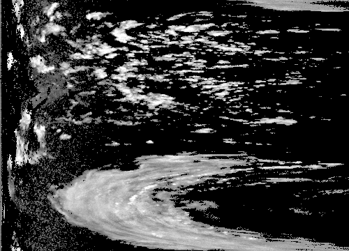
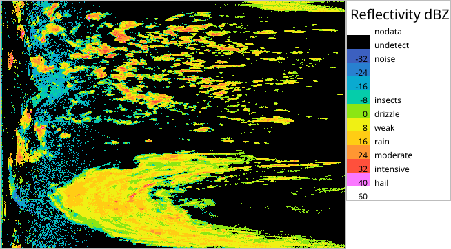

This section handles image processing. See also a separate section for Reading and writing image files .
Basic image operations
Extracting images from data
As mentioned in Reading and writing image files, data can be extracted and stored as image files simply by selecting data and issuing –outputFile ( -o ) command:
rack volume.h5 --select quantity=DBZH -o sweep.png
If a user wishes to rescale intensities, The scaling and special codes are defined with –encoding .
rack volume.h5 --select quantity=DBZH --encoding C,0.25,-32.0 --image -o sweep-rescaled.png
Notice that this command will not affect the actual radar data (HDF5 structure) in memory. (The one –image command required in earlier versions of rack is called implicitly.) For converting the actual data, use –convert as explained in Data conversions .

A sweep with rescaled intensities.
Creating coloured images
A colour palette can be added by loading a text file consisting of lines that contain a threshold followed by red, green and blue values. The format is compatible with that of color-relief command used by gdaldem (https://gdal.org/programs/gdaldem.html) The file may contain comments escaped by a hash. For example, a file containing
# dBZ
# undetect
@ 0 0 0
# nodata
@ 255 255 255
# noise
-32.0 0 0 0
-24.0 60 140 200
-16.0 10 155 225
# insects
-8.0 5 205 170
# drizzle
0.0 140 230 20
# weak
8.0 240 240 20
# rain
16.0 255 205 20
# moderate
24.0 255 150 50
# intensive
32.0 255 80 60
# hail
40.0 250 120 255
#
60.0 255 255 255
can be applied for colouring a sweep using the following command:
rack volume.h5 --select dataset1,quantity=DBZH --palette palette-DBZH.txt -o sweep-rgb.png
The resulting image is stored in the HDF5 structure in parallel with the source data, in the next available data{i} group. (In earlier versions: in a separate image object.) The resulting quantity – what:quantity – is by default composed by appending /Palette , so DBZH/Palette for example. The coloured image data is internally marked temporary and will not be saved in a HDF5 files by default. If one wishes to save a color image in the HDF5 structure, a quantity has to be given explicitly:
rack volume.h5 --select quantity=DBZH --encoding quantity=DBZH_RGB --palette palette-DBZH.txt -o dbzh-rgb.h5
Another possibility is to remove the temporary marker with –keep dataset:/data: command.
Note that colouring is implemented by data conversion; Rack does not currently support actual palette (lookup) objects in HDF5.
The comment lines starting with '#' are handled as well:
- the first comment in the file is the title of the palette
- the last comment before a color entry is a label for that entry
- other comments are discarded
Entries associated with special data codes undetect and nodata – the actual values of which may vary – are prefixed with '@', and the preceding comment must contain the code key only in the short form (without leading what: ).
The palette information can be also converted to a graphic legend file using –legendOut command. The output is in Scalable Vector Graphics (SVG) format, displaying titles and labels described above.
# Older versions:
rack --palette palette-DBZH.txt --legendOut legend.svg
# Current version:
rack --paletteIn palette-DBZH.txt --legendOut legend.svg
The comment before each colour entry in the palette file will be displayed as lower limits in the legend. The SVG file can be converted to a pixel image using convert program, for example.

A sweep coloured with --palette command.
The palette command can be applied to practically all the data objects: sweeps, polar products and Cartesian images, including composites.
The palette can be also provided in JSON (https://www.json.org/) format which is not as compact as the native syntax shown above but increases portability towards other languages like Python and JavaScript. The current naming and hierarchy is experimental, containing color definitions in entries , each entry essentially containing RGB color vector , minimum intensity index , and a description in English (en) .
{
"metadata": {
"title": "dBZ"
},
"entries": {
"id-01": {
"color": [ 1, 1, 1 ],
"en": "noise",
"index": -32.0
},
"id-02": {
"color": [ 255, 205, 20 ],
"en": "rain",
"index": 16.0
},
"id-03": {
"color": [ 255, 150, 50 ],
"en": "moderate",
"index": 24.0
},
...
"id-24": {
"color": [ 255, 255, 255 ],
"en": "nodata"
},
"id-25": {
"color": [ 0, 0, 0 ],
"en": "undetect"
}
}
}
Adding transparency
Adding transparency to radar images is useful in applications involving layered data viewing. Transparency can be added to gray or colour images with –imageTransp .
--imageTransp <ftor>,<undetect>,<nodata> (Section: images)
Adds a transparency channel. Uses copied image, creating one if needed.
ftor= [min:max or Functor_p1_p2_p3_...]
undetect=0 [opacity of 'undetect' pixels]
nodata=1 [opacity of 'nodata' pixels]
The first parameter, threshold defines the values to be transparent in the image. It can be one of the following
A scalar threshold, under which all the values will be transparent.
A range \c {min}:{max} inside which full transparency (at \c {min} ) will linearly change to opaque (at \c {max} ).
A \e functor for more flexibly defining the transparency (documentation to appear)
By default, it is handled as a physical values, like +5 (dBZ). This can be changed with –iPhysical false which uses interval [0,1] normalized by actual range of the current storage type, like [0,255] or [0,65535]. Instead of a threshold, a colon-separated range (eg. 5:15) can be given, yielding a smooth transition from transparent to opaque. By default, undetect is transparent and nodata is opaque. The following command creates a Cartesian image, adds palette and transparency to the image and stores the results in image files
# Using physical threshold of 5dBZ (implicit --iPhysical true)
rack volume.h5 -Q DBZH -c --palette palette-DBZH.txt --imageTransp 5 -o cartesian-rgba1.png
# Using a normalized, smooth threshold (10%:20%)
rack volume.h5 -Q DBZH -c --palette palette-DBZH.txt --iPhysical false --imageTransp 0.1:0.2,undetect=0.2,nodata=0 -o cartesian-rgba2.png
The older command –imageAlpha uses linear scaling of data: either
the original gain, offset, undetect, nodata or values overridden with –encoding. (The storage type cannot be changed.) The following command creates a Cartesian image, adds palette and transparency to the image and stores the results in image files:
rack volume.h5 -Q DBZH -c --palette palette-DBZH.txt -o cartesian-rgb.png --encoding C,0.2,-32,1,100 --imageAlpha -o cartesian-rgba.png
Image processing commands
In addition to the commands listed above, Rack provides several general image processing commands that can be used for smoothing, thresholding and rescaling image data - typically Cartesian products. By default, the result replaces the original array - like DBZH data - in the data object. Alternatively, a new quantity may be set with special parameter quantity given by –encoding command. The commands have form –i<Command> . The List of image operators is attached at the end of this page. Some selected examples are shown below.
Thresholding data can be done as follows:
rack composite.h5 --iThreshold +10,-32,LIMIT=
true -o compositeThresholdPhys.h5
Setting LIMIT=true prevents from underflow and overflow – especially when using char and short integers as storage types. By default, thresholding applies to physical intensity values. This can be changed with –iPhysical , to handle intensities as as raw (0) or physical (1) values. Hence, to threshold data with +10 dBZ, setting values below it to -32 dBZ, is done with:
rack composite.h5 --iPhysical
false --iThreshold 84,0 -o compositeThresholdRaw.h5
Radar data can fuzzified ie. mapped to interval [0.0,1.0] using various fuzzy operators. (See example of using –iFuzzyStep in Application: creating clutter maps ). In some cases, probability (PROB ) can be a suitable target quantity, set within –encoding .
Resizing of all the data arrays in the first dataset<1> (typically dataset1) can be done as follows:
rack composite.h5 --iResize 500,500 -o composite500.h5
Like with many other commands, the data can be selected with –select or, for quantities only, more compactly with -Q :
rack composite.h5 -Q DBZH --iResize 500,500 -o composite500.h5
rack volume.h5 --select
'dataset2/data:,quantity=VRAD,count=3' --iResize 250,180 -o volume-small-VRAD.h5
Smoothing an image can performed with sliding window based averaging. Rectangular, Gaussian and magnitude-saving "flow" averaging is supported:
rack composite.h5 -Q DBZH --iAverage 10:10 -o composite-avg.png
rack composite.h5 -Q DBZH --iGaussianAverage 10:10 -o composite-gaussian.png
rack composite.h5 -Q DBZH --iFlowAverage 10:10 -o composite-flowAvg.png
These method use weighted averaging is quality data (QIND) is associated. The last method (flow average) is suited to averaging vector fields, esp. if opposite vector components should not be simply cancelled. For the resulting vector, the direction of the sum vector is chosen and rescaled to the average magnitude.
Also distance transform yields blurred image data.
# For data without quality field
rack composite.h5 -Q DBZH --iDistanceTransform 10:10 -o composite-dist.png
rack composite.h5 -Q DBZH --iDistanceTransformExp 10:10 -o composite-distExp.png
# For data with quality field (QIND)
rack composite.h5 -Q DBZH --iDistanceTransformFill 10,10 -o composite-distFill.png
rack composite.h5 -Q DBZH --iDistanceTransformFillExp 10,10 -o composite-distFIllExp.png
Repeated blurring is compactly produced with BlenderOp which mixes the blurred image with the original image. It employs the abovementioned blurring methods. For mixing, it uses maximum or linear mixture. Respectively, if quality data (QIND) is available, it uses maximum-quality or quality-weighted methods.
rack composite.h5 -Q DBZH --iBlender 10:10,avg -o composite-blended-avg.png
rack composite.h5 -Q DBZH --iBlender 10:10,avgGauss -o composite-blended-avgGauss.png
rack composite.h5 -Q DBZH --iBlender 10:10,avgFlow -o composite-blended-avgFlow.png
How it works internally
In Rack, the data sets of a HDF structure are implemented directly as image objects. Copies of images are needed only if the intensities are rescaled or coloured.
Rack has two memory arrays in which images can be extracted: grayImage and colorImage. In addition, there are two pointers: grayImagePtr and imagePtr . The flow of image data is illustrated below. grayImagePtr points to the latest HDF5 object processed or grayImage . imagePtr points to the latest HDF5 object processed, grayImage or colorImage. To be specific, these pointers point to the first HDF5 dataset matching the path selector –select , for example /dataset1/data1/data . The pointers are updated automatically by appropriate commands like –image or –palette . The flows implemented using pointers are illustrated with dotted lines.
List of image operators
Rack - a radar data processing program
Section: imageOps
--iAdd <scale>,<bias>,<LIMIT>
Adds values
--iAverage <width>
Window averaging with optional weighting support.
--iBlender <width>,<spreader>,<mix>,<loops>,<expansionCoeff>
Smoothes image repeatedly, mixing original image with the result at each round.
--iCatenate <scale>,<offset>
Catenates images
--iCopy <dstView>,<scale>,<bias>,<LIMIT>
Copies current view to: f=full image, i=image channels, a=alpha channel(s), 0=1st, 1=2nd,...
--iCrop <width>,<height>,<i>,<j>
Crop image.
--iDistance <functor>
Computes the distance of pixel vectors. Post-scaling with desired functor.
--iDistanceTransform <width>,<height>,<topology>
Linearly decreasing intensities - applies decrements.
--iDistanceTransformExp <width>,<height>,<topology>
Exponentially decreasing intensities. Set half-decay radii.
--iDistanceTransformFill <width>,<height>,<topology>,<alphaThreshold>
Spreads intensities linearly up to distance defined by alpha intensities.
--iDistanceTransformFillExp <width>,<height>,<topology>,<alphaThreshold>
Spreads intensities exponentially up to distance defined by alpha intensities.
--iDiv <scale>,<bias>,<LIMIT>
Rescales intensities linerarly
--iFloodFill <location>,<intensity>,<value>
Fills an area starting at (i,j) having intensity in [min,max], with a value.
--iFlowAverage <width>
Window average that preserves the magnitude
--iFuzzyBell <location>,<width>,<scale>,<bias>,<LIMIT>
Fuzzy bell function.
--iFuzzyBell2 <location>,<width>,<scale>,<bias>,<LIMIT>
Fuzzy Gaussian-like bell function.
--iFuzzyStep <position>,<scale>,<bias>,<LIMIT>
Fuzzy step function.
--iFuzzyStepsoid <location>,<width>,<scale>,<bias>,<LIMIT>
Fuzzy step function
--iFuzzyTriangle <position>,<peakPos>,<scale>,<bias>,<LIMIT>
Fuzzy triangle function.
--iFuzzyTwinPeaks <location>,<width>,<scale>,<bias>,<LIMIT>
Fuzzy function of two peaks.
--iGamma <gamma>,<LIMIT>
Gamma correction for brightness.
--iGaussianAverage <width>,<radius>
Gaussian blur implemented as quick Wx1 and 1xH filtering.
--iGradient <radius>,<LIMIT>
Computes horizontal and vertical derivatives: df/di and df/dj.
--iGradientHorz <radius>,<LIMIT>
Horizontal intensity difference
--iGradientVert <radius>,<LIMIT>
Vertical intensity difference
--iGray <coeff>
Convert multi-channel image to single. Post-scaling with desired functor.
--iHighBoost <width>,<height>,<coeff>
Mixture of original and high-pass filtered image
--iHighPass <width>,<height>,<scale>,<offset>,<LIMIT>
High-pass filter for recognizing details.
--iImpulseAvg <decay>,<extendHorz>,<extendVert>,<weightThreshold>
Infinite-impulse response type spreading
--iLaplace <radius>,<LIMIT>
Second intensity derivatives, (df/di)^2 and (df/dj)^2
--iLaplaceHorz <radius>,<LIMIT>
Second horizontal differential
--iLaplaceVert <radius>,<LIMIT>
Second vertical differential
--iMagnitude <functor>
Computes the magnitude of a pixel vector. Post-scaling with desired functor.
--iMarginStat <mode>,<stat>,<medianPos>
Computes statistics on <horz> or <vert> lines: iAverage,sum,median,stdDev,variance,miN,maX
--iMax
Maximum of two values.
--iMedian <width>,<percentage>,<bins>
A pipeline implementation of window median.
--iMin
Minimum of two values.
--iMix <coeff>,<scale>,<bias>,<LIMIT>
Rescales intensities linerarly
--iMul <scale>,<bias>,<LIMIT>
Rescales intensities linerarly
--iMultiThreshold <range>,<min>,<max>
Change values outside given range to target.min and target.max
--iNegate
../drain/imageops/ImageOpBank.h
--iProduct <functor>
Computes the dot product of pixel vectors. Post-scaling with desired functor.
--iQualityMixer <coeff>
Weighted blending of two images.
--iQualityOverride <advantage>,<decay>
Compares two images, preserving pixels having higher alpha value. Src alpha is pre-multiplied with advantage.
--iQualityThreshold <threshold>,<replace>
Threshold data with quality
--iQuantizator <bits>,<LIMIT>
Quantize to n bits. (For integer images)
--iRemap <fromValue>,<toValue>,<LIMIT>
Rescales intensities linerarly
--iRescale <scale>,<bias>,<LIMIT>
Rescales values linerarly: y = scale*x + bias
--iResize <width>,<height>,<interpolation>,<scale>
Resize geometry and scale intensities
--iRunLengthHorz <threshold>
Computes lengths of segments of intensity above threshold.
--iRunLengthVert <threshold>
Computes lengths of segments of intensity above threshold.
--iSegmentArea <intensity>,<functor>
Computes segment sizes.
--iSegmentStats <statistics>,<intensity>,<functor>
Segment statistics: area, mx, my, variance, slimness, horizontality, verticality, elongation
--iSub <scale>,<bias>,<LIMIT>
Subtracts values
--iThreshold <threshold>,<replace>,<LIMIT>
Resets values lower than a threshold
--iThresholdBinary <threshold>,<replace>,<replaceHigh>,<LIMIT>
Resets values lower and higher than a threshold
--iTranspose
Flips image matrix around its corner.
--iWindowHistogram <width>,<valueFunc>,<percentage>,<bins>
A pipeline implementation of window histogram; valueFunc=[asmdvNX] (avg,sum,median,stddev,variance,miN,maX)
For help on a commands, type:
--help <command>
For help on command sections, type:
--help [general|trigger|images|andre|science|products|accumulation|cart|imageOps|all]
 1.8.17
1.8.17